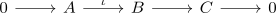
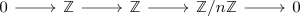

chain cone of a short exact sequence in general not chain homotopy equivalent
Proposition
Let $\mathcal{A}$ be an abelian category and $\mathrm{Ch_*}(\mathcal{A})$ be the category of chain complexes,

a short exact sequence and $\mathrm{cone}(\iota)$ the cone.
Then the projection out of a chain cone $\pi: \mathrm{cone}(\iota) \rightarrow C$ is in general not a chain homotopy equivalence
Proof
Consider the short exact sequence

with $0$ as boundary map.
Then the cone is given by
\begin{displaymath}
\begin{tikzcd}
\mathbb{Z} \oplus \mathbb{Z} \arrow[]{r}{\begin{pNiceMatrix} 0 & \cdot n \\ 0 & 0 \end{pNiceMatrix} }& \mathbb{Z} \oplus \mathbb{Z}
\end{tikzcd}
\end{displaymath}and hence the homology is
\begin{align*}
H_n(\mathrm{cone}(\cdot n)) = \mathbb{Z} \oplus \mathbb{Z}/n \mathbb{Z}
\end{align*}
Furhtermore the homology of $\mathbb{Z}/n \mathbb{Z}$ is given by
\begin{align*}
H_n(\mathbb{Z}/n \mathbb{Z}) = \mathbb{Z}/n \mathbb{Z}
\end{align*}
(see: homology of a trivial boundary complex)
therefore by Homology functor invariant under chain homotopy it follows that $\pi$ is not a chain homotopy equivalence